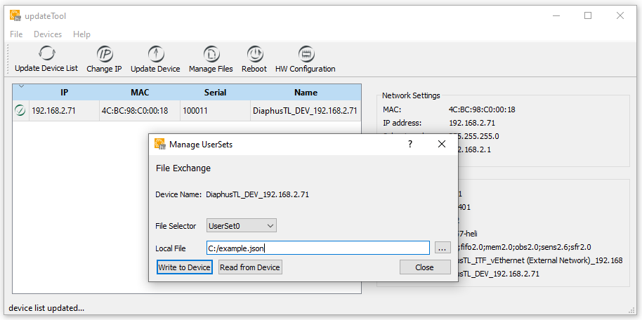

TN_19.1.0.1: UserSet - A short Introduction
Context and Challenge: Storing gen4 Device Configurations
Heliotis Gen4 devices offer highly customizable configurations through device features. In some cases, one may not want to specify the entire configuration for an inspection task in the control application.
Additionally, some configurations are explored in a lab environment before being applied in production. The standard approach is to implement the new configuration directly in the user application. However, in certain situations, modifying the user application is not feasible/permitted.
In these cases, it becomes necessary to store specific configurations directly on the device.
Solution: UserSet
To address these scenarios, Gen4 devices support the UserSet functionality, as defined by GenICam and described in the Standard Feature Naming Convention (SFNC) of GenICam [1]. This technical note outlines various use cases and procedures for configuring Heliotis Gen4 devices through UserSets.
Heliotis devices offer two custom UserSets: UserSet0 and UserSet1, which serve as independent storage locations for
full device configurations. A third option, Default, is available through the UserSetSelector feature. The Default
option is read-only and represents the factory default configuration.
The primary UserSet operations include:
Store – Saves the current configuration to the selected storage location on the device.
Load – Loads a previously stored configuration from the selected storage location.
Additionally, users can define which UserSet (UserSet0, UserSet1, or Default) should automatically load upon device boot-up or reset.
Storing (or Creating) a UserSet
To store a UserSet, an application or script must connect to the Gen4 device and configure it appropriately. Matching feature values can be determined using a GenICam Viewer or the Heliotis-specific heliViewer. Further recommendations may be provided by Heliotis.
Important
A UserSet must be stored while the device is in configuration mode (i.e. not during an acquisition) and before the device connection is closed (which triggers a reset).
First, select the desired UserSet using
UserSetSelector.Then, execute the corresponding save operation (e.g.,
UserSetSave).
UserSetSelector = "UserSet0"
UserSetSave.execute()
Loading a UserSet
To apply a previously stored UserSet, the application must execute the Load operation after establishing a device connection. This process loads the full camera configuration, overwriting any previously set feature values.
UserSetSelector = "UserSet0"
UserSetLoad.execute()
Default UserSet
Gen4 devices support configuring a Default UserSet that loads automatically upon boot-up, reset, or reconnection. This allows users to define default values for the device.
The feature name for configuring the Default UserSet is UserSetDefault. Unlike most other features, UserSetDefault
is non-volatile, meaning its value remains unchanged even after device resets, reconnections, or firmware updates.
Available options for UserSetDefault:
UserSet0
UserSet1
Default (factory default setting)
UserSetDefault = "UserSet0"
File Transfer
Users may need to transfer a stored UserSet from one device to another. Gen4 devices support UserSet transfers through the FileAccess interface, as defined by GenICam.
Most GenICam-compatible applications support file transfer. Additionally, Heliotis provides updateTool, which facilitates UserSet transfers to and from devices.
Within updateTool, users can access the Manage Files dialog to select a device and define the desired UserSet through FileSelector. The transfer process from and to the file specified in Local File can then be initiated using Write to Device or Read from Device.
See also (see Check File Transfer)
{kind=link}

Fig. 5 File Transfer support in the updateTool
Limitations
1. The target device must have the exact same hardware configuration as the source device, since certain features depend on hardware compatibility.
Example: External Xenax stages require IP address definitions that other stage types do not support.
The target device must have firmware that is the same or newer than the source device’s firmware.
While older UserSets can be migrated to newer firmware versions during file transfer, newer UserSets cannot be read by older firmware.
The File Transfer process does not provide an error notification when an unsupported UserSet is sent to a device.
Additional Features
AutomatedStageInit
When using heliInspect, the initial configuration after a power-up requires executing the StageInit command to initialize
the stage. This procedure is not automated by default since additional configuration steps (e.g., defining an IP address)
may be required.
With the UserSet mechanism, the full configuration - including IP address - becomes available at boot time, allowing automated
stage initialization. Users can enable this feature by setting AutomatedStageInit = true.
Check File Transfer
The File Transfer implementation does not generate an error message if an unsupported UserSet is transferred to a device.
To verify whether the transfer was successful, users can access log information using the File Manager in updateTool.
Select Read from Device to retrieve the logs.
Store the logs as a .tar.gz file on the host computer.
Open the log file to check for error messages.
[185582.447516] Global 1956635728 ERROR Failed to update UserSet0: Could not convert file /data/heliService/userSets/userSet0.json
Document History
Version |
Date |
Changes |
Responsible |
|---|---|---|---|
19.1.0.0 |
22-11-2024 |
initial version |
sm |
19.1.0.1 |
12-06-2025 |
editing |
bm |